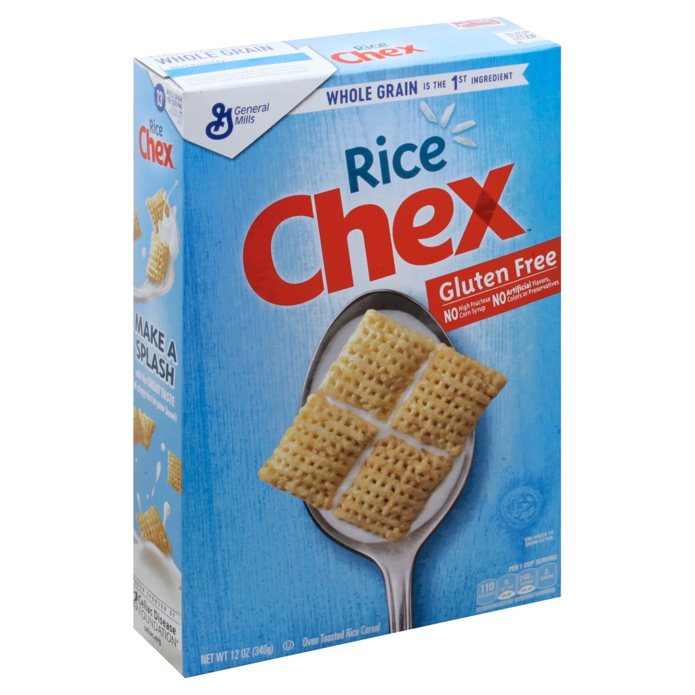
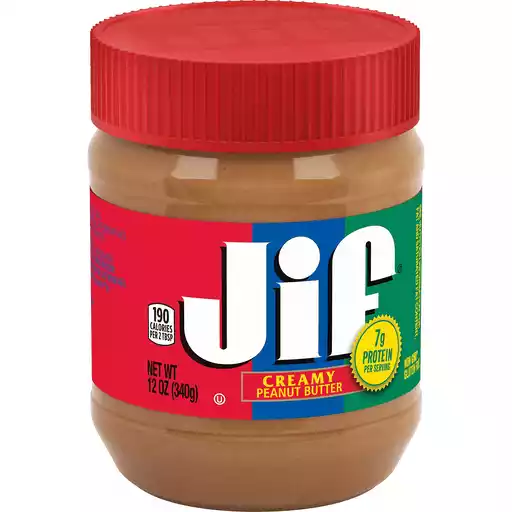
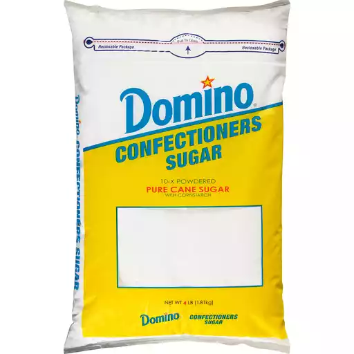

| Recipe for Puppy Chow | ||
|---|---|---|
| Ingredient Name | Amount | Picture of Ingredient |
| Rice Chex | 6 Cups |  |
| Chocolate Chips | 1 Cup | |
| Peanut Butter | 1 Cup |  |
| Powdered Sugar | 2 Cups |  |
| Instructions | ||
| 1. Melt peanut butter and chocolate together, either on the stovetop or in the microwave. 2. Next, add 3 cups of cereal to a large bowl. Pour 1 cup of your chocolate/peanut butter mixture over the cereal. 3. Add 3 more cups of cereal to the bowl and then pour the rest of the chocolate/peanut butter mixture on top. 4. Stir until the cereal is evenly coated. If there are pools of chocolate/peanut butter at the bottom of your bowl, add more cereal 1/4 cup at a time until all of it is coating your cereal. 5. Let the mixture cool slightly. You do not want it to harden. 6. Once your mixture is at or below room temperature, add 1 cup of powdered sugar. Mix until combined. 7. Let cool for about 15 minutes. 8. Add more powdered sugar 1/4 cup at a time until your cereal is coated to your satisfaction. 9. Store in an airtight container at room temperature and enjoy! |
||